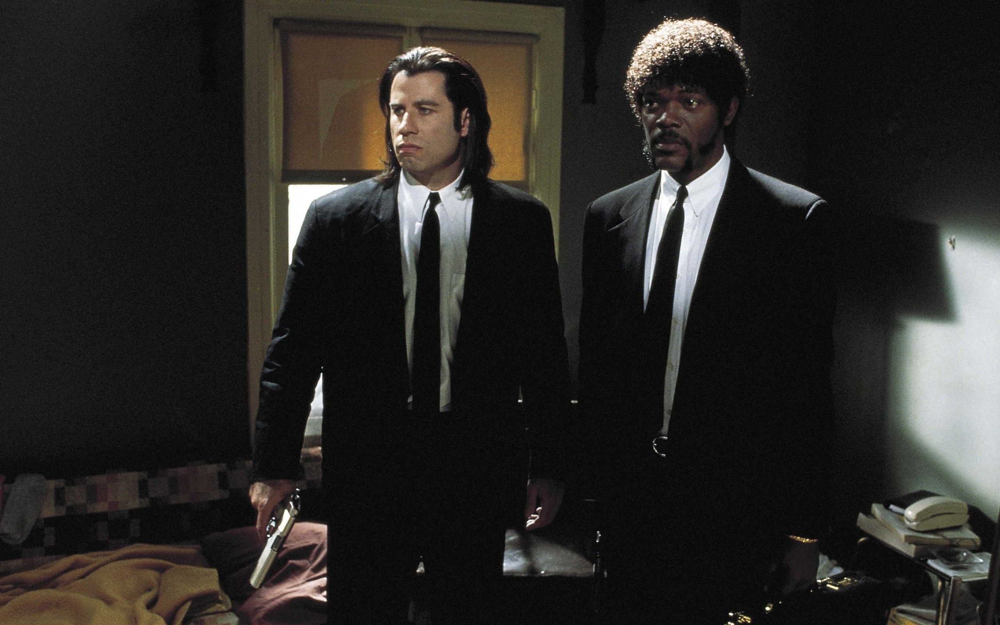

Pulp Fiction

Just because you are a character doesn't mean you have character.
Two hitmen, a boxer, a gangster and his wife — their stories cross in Los Angeles over a few days. The film jumps back and forth in time, and small everyday conversations turn into tense and darkly funny scenes.
- Type
- Movie
- Release Date
- Run time
- 154 min
- Genres
- Crime, Thriller